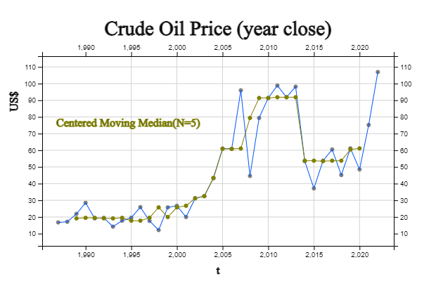

Chapter 13. Time Series Analysis
13.2 Smoothing of Time Series
13.2.1 Centered Moving Average
| Year | Price of Oil | 5-point Centered Moving Average |
|---|---|---|
|
1987 1988 1989 1990 1991 1992 1993 1994 1995 1996 1997 1998 1999 2000 2001 2002 2003 2004 2005 2006 2007 2008 2009 2010 2011 2012 2013 2014 2015 2016 2017 2018 2019 2020 2021 2022 |
16.74 17.12 21.84 28.48 19.15 19.49 14.19 17.77 19.54 25.90 17.65 12.14 25.76 26.72 19.96 31.21 32.51 43.36 61.06 60.85 95.95 44.60 79.39 91.38 98.83 91.83 98.17 53.45 37.13 53.75 60.46 45.15 61.14 48.52 75.21 106.95 |
20.666 21.216 20.630 19.816 18.028 19.378 19.010 18.600 20.198 21.634 20.446 23.158 27.232 30.752 37.620 45.798 58.746 61.164 68.370 74.434 82.030 81.206 91.920 86.732 75.882 66.866 60.592 49.988 51.526 53.804 58.096 67.394 |
[ : . ]
| Y | |||
| X | |||
| Main Title | |||
| y title | |||
| nY | ( ≤ 120) | Ȳ |
| N = | 1 < N < 30 | |
| N = | 1 < N < 30 | |
| α = | S₀ = Y₁ | |
| α = | S₀ = Y₁ | |
| N = | 1 < N < 10 | |
The N-point centered moving average of a time series refers to the average of N data from a single point in time. For example, in crude oil price data, the value of the five-point moving average for a specific year is the average of the data for two years before the specific year, that year, and the data for the next two years. Expressed as an expression, if \(M_t\) is a moving average in time \(t\), the 5-point centered moving average is as follows: $$ M_t = \frac{Y_{t-2} \,+\, Y_{t-1} \,+\, Y_{t} \,+\, Y_{t+1} \,+\, Y_{t+2} } {5 } $$ For example, the 5-point centered moving average for 1989 is as follows.
\(\qquad M_{1989} \,=\, \frac {Y_{1987} + Y_{1988} +Y_{1989} + Y_{1990} + Y_{1991} } {5 } \)
\( \qquad \qquad \quad =\, \frac {16.74 + 17.12 + 21.84 + 28.48 + 19.15} {5} \,=\, 20.6660 \)
[Table 13.2.2] shows the values of all 5-points centered moving averages obtained in this way and <Figure 13.2.1> is the graph of 5-points moving average. Note that the moving averages for the first two years and the last two years cannot be obtained here. It can be seen that the graph of the moving average is better for grasping the long-term trend than the graph of the original data because short-term fluctuations are removed.
The choice of a value N for the N-point moving average is important. A large value of N will provide a smoother moving average, but it has the disadvantage of losing more points at both ends and insensitive to detecting important trend changes. On the other hand, if you choose small N, you will lose less data at both ends, but you may not be able to get the smoothing effect because you will not sufficiently eliminate short-term fluctuations. In general, try a few values N to reflect important changes that should not be missed, while achieving a smoothing effect and balancing the points not to lose too much at both ends.
If the value of N is an even number, there is a difficulty in obtaining a central moving average with the same number of data on both sides of the base year. For example, the center of the four-point moving average from 1987 to 1990 is between 1988 and 1989. If you denote this as \(M_{1988.5}\), it can be calculated as follows:
\( \qquad M_{1988.5} \,=\, \frac {Y_{1987} + Y_{1988} +Y_{1989} + Y_{1990} } {4 } \)
\( \qquad \qquad \quad \,=\, \frac {16.74 + 17.12 + 21.84 + 28.48 } {4} \,=\, 21.045 \)
The 4-point moving average obtained in this way is called a non-central 4-points moving average. In the case of this even number N, the non-central moving average does not match the observation year of the original data, which is inconvenient. In the case of this even number N, it is calculated as the average of the noncentral moving average values of two adjacent non-central moving averages. In other words, the central four-point moving average in 1989 is the average of \(M_{1988.5}\) and \(M_{1989.5}\) as follows:
\( \qquad M_{1989} \,=\, \frac {M_{1988.5} \,+\, M_{1989.5} } {2 } \)
\( \qquad \qquad \quad =\, \frac {21.0450 \,+\, 21.6475 } {2} \,=\, 21.3463 \)
If the time series is quarterly or monthly, a 4-point central moving average or a 12-point central moving average is an average of one year, so it is often used to observe data without seasonality.
13.2.2 Exponential Smoothing
3-point moving average can be considered the weighted average of three data with each weight \(\frac{1}{3}\) as follows: $$ M_t \,=\, \frac{Y_{t-1} \,+\, Y_{t} \,+\, Y_{t+1} } {3 } \,=\, \frac{1}{3}Y_{t-1} \,+\, \frac{1}{3}Y_{t} \,+\, \frac{1}{3}Y_{t+1} $$ When the weights are \(w_1 , w_2 , ... , w_n\), the weighted moving average \(M_t\) of the time series is defined as follows: $$ M_t \,=\, \sum_{i=1}^{n} w_i Y_{i} $$ where \(n\) is the number of data, \(w_i \ge 0\) and \(\sum_{i=1}^{n} w_i = 1 \).
Various weighted averages with different weights can be used depending on the purpose. Among them, a smoothing method that gives more weight to data closer to the present and smaller weights as it is farther from the present is called exponential smoothing. The exponential smoothing method is determined by an exponential smoothing constant \(\alpha\) that has a value between 0 and 1. The exponentially smoothed data \(E_t\) is calculated as follows:
\( \qquad E_{1} \,=\, \alpha \,Y_{1} \,+\, (1- \alpha)\, E_{0} \)
\( \qquad E_{2} \,=\, \alpha \,Y_{2} \,+\, (1- \alpha)\, E_{1} \)
\( \qquad E_{3} \,=\, \alpha \,Y_{3} \,+\, (1- \alpha)\, E_{2} \)
\( \qquad \cdots \)
\( \qquad E_{t} \,=\, \alpha \,Y_{t} \,+\, (1- \alpha)\, E_{t} \)
Here, an initial value \(E_{0}\) is required, and \(Y_1\) is usually used a lot, and the average value of the data can also be used. The exponentially smoothed value \(E_t\) at the point in time \(t\) gives weight \(\alpha\) to the current data, and the \(1-\alpha\) weight to the previous smoothed data is given. The exponentially smoothed value \(E_t\) can be represented with the original data \(Y_t\) as follows: $$ E_t \,=\, \alpha Y_t + (1-\alpha) Y_{t-1} + \alpha(1-\alpha)^2 Y_{t-2} + \cdots + \alpha(1-\alpha)^{t-2} Y_2 + (1-\alpha)^{t-1} Y_1 $$ Therefore, the exponential smoothing method uses all data from the present and the past, but gives the current data the highest weight α, and gives a lower weight as the distance from the present time increases.
Exponential smoothing of the crude oil price in [Table 13.2.1] with the initial value \(E _{1986} = Y _{1987} \) and exponential smoothing constant \(\alpha\) = 0.3 is as follows.
\( \qquad E_{1986} \,=\, E_{1987} = 16.74 \)
\( \qquad E_{1987} \,=\, 0.3 \,Y_{1987} \,+\, (1- 0.3)\, E_{1986} \,=\, (0.3)(16.74)+(0.7)(16.74)=16.74 \)
\( \qquad E_{1988} \,=\, 0.3 \,Y_{1988} \,+\, (1- 0.3)\, E_{1987} \,=\, (0.3)(17.12)+(0.7)(16.74)=16.854 \)
All data exponentially smoothed with \(\alpha\) = 0.3 are given in [Table 13.2.2]. It can be seen that, in the exponential smoothing method, there is no loss of data at both ends, unlike the moving average method. The crude oil price time series and exponentially smoothed data are shown in <Figure 13.2.2>. It can be seen that the smoothed data are not significantly different from the original data. If the value of\(\alpha\) is small, more weight is given to the past data than to the present, making it less sensitive to sudden changes in the present data. Conversely, the closer the value of \(\alpha\) is to 1, that is, the more weight is given to the current data, the more the smoothed data resembles the original data, and the smoothing effect disappears.
| Year | Price of Oil | Exponential Smoothing α=0.3 |
|---|---|---|
|
1987 1988 1989 1990 1991 1992 1993 1994 1995 1996 1997 1998 1999 2000 2001 2002 2003 2004 2005 2006 2007 2008 2009 2010 2011 2012 2013 2014 2015 2016 2017 2018 2019 2020 2021 2022 |
16.74 17.12 21.84 28.48 19.15 19.49 14.19 17.77 19.54 25.90 17.65 12.14 25.76 26.72 19.96 31.21 32.51 43.36 61.06 60.85 95.95 44.60 79.39 91.38 98.83 91.83 98.17 53.45 37.13 53.75 60.46 45.15 61.14 48.52 75.21 106.95 |
16.740 16.854 18.350 21.389 20.717 20.349 18.501 18.282 18.659 20.832 19.877 17.556 20.017 22.028 21.408 24.348 26.797 31.766 40.554 46.643 61.435 56.385 63.286 71.714 79.849 83.443 87.861 77.538 65.416 61.916 61.479 56.580 57.948 55.120 61.146 74.888 |

<Figure 13.2.2> Price of Crude Oil and Exponential Smoothing with α=0.3
|
13.2.3 Filtering by Moving Median
For example, the 1989 5-point central moving median for crude oil prices in [Table 13.2.3] is as follows:
\(\qquad MovingMedian_{1989} \,=\, median \{ Y_{1987} , Y_{1988} ,Y_{1989} , Y_{1990} , Y_{1991} \} \) \(\qquad \qquad \qquad \qquad \qquad \;\;=\, median \{16.74, 17.12 , 21.84 , 28.48,19.15 \} \,=\, 19.15 \)
[Table 13.2.3] and <Figure 13.2.3> show all the five-point moving median values obtained in this way and their graphs. Note that the moving median for the first two years and the last two years are not available here. Because the centered moving medians remove extreme values, it is called a filtering and the time series is much smoother than the original data.
| Year | Price of Oil | 5-point Centered Moving Median |
|---|---|---|
|
1987 1988 1989 1990 1991 1992 1993 1994 1995 1996 1997 1998 1999 2000 2001 2002 2003 2004 2005 2006 2007 2008 2009 2010 2011 2012 2013 2014 2015 2016 2017 2018 2019 2020 2021 2022 |
16.74 17.12 21.84 28.48 19.15 19.49 14.19 17.77 19.54 25.90 17.65 12.14 25.76 26.72 19.96 31.21 32.51 43.36 61.06 60.85 95.95 44.60 79.39 91.38 98.83 91.83 98.17 53.45 37.13 53.75 60.46 45.15 61.14 48.52 75.21 106.95 |
19.15 19.49 19.49 19.15 19.15 19.49 17.77 17.77 19.54 25.76 19.96 25.76 26.72 31.21 32.51 43.36 60.85 60.85 61.06 79.39 91.38 91.38 91.83 91.83 91.83 53.75 53.75 53.45 53.75 53.75 60.46 61.14 |
|

<Figure 13.2.3> Price of Crude Oil and 5-point Centered Moving Median
|
If the value of N is an even number, there is a difficulty in obtaining the central moving median having the same number of data on both sides of the base year. For example, the center of the four-point moving median from 1987 to 1990 is between 1988 and 1989. If you denote this as \(Median_{1988.5}\), it can be calculated as follows:
\(\qquad MovingMedian_{1988.5} \,=\, median \{Y_{1987} , Y_{1988} , Y_{1989} , Y_{1990} \} \) \(\qquad \qquad \qquad \qquad \qquad \;=\, median \{16.74 , 17.12 , 21.84 , 28.48 \} \,=\, \frac {17.12 +21.84} {2} = 19.48 \)
The 4-point moving median obtained in this way is called the non-central 4-point moving median. As such, the non-central moving average in the case of this even number N does not match the observation year of the original data, which is inconvenient. In the case of this even number, it is calculated as the average of the values of the two non-central moving medians that are adjacent to each other. In other words, the central four-point moving median in 1989 is the mean of \(MovingMedian_{1988.5}\) and \(MovingMedian_{1989.5}\).